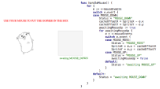
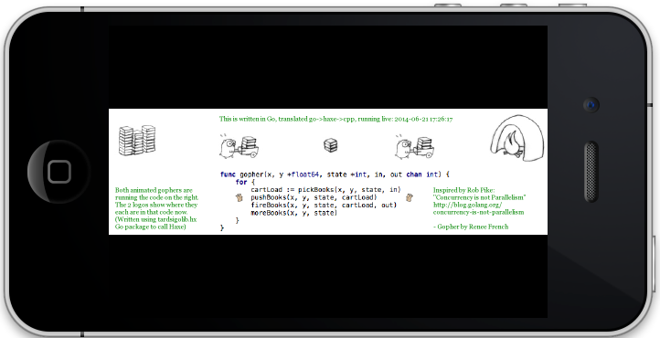

For the above: inspiration; Go source; flash version. Want 8 gophers? JS; flash. ...or rewritten for GopherJS? The Go gopher was designed by Renee French. The design is licensed under the Creative Commons 3.0 Attributions license. For more details: http://blog.golang.org/gopher
TARDIS Go transpiler
The objective of the project is to save time and energy by enabling the same client-side Go code to be deployed on a very wide range of platforms.
TARDIS Go does this by transpiling Go->Haxe. The Haxe compiler then generates equivalent code for JavaScript, ActionScript/Flash, C++, C# and Java. By linking to cross-platform Haxe libraries like OpenFL, client-side Go code can run almost anywhere.
For example the Go animation running at the top of this page was transpiled into JavaScript. That same Go code also runs unaltered in ActionScript/Flash, and when transpiled into C++ also runs on: iOS, Android, Windows, OSX, Linux, and other less-used platforms.{kind=link}
The project works, with 90 go1.4 standard packages passing their tests, although it is not yet production-ready.
Micro FAQ:
- Where are the installation instructions? github.com/tardisgo/tardisgo
- Where is some working code? github.com/tardisgo/tardisgo-samples
- How do I discuss the project publically? Please use the Google Group.
- How do I ask a question privately? Please e-mail Elliott.
- Why call it "TARDIS" Go? See this blog entry.
- Want to write your own Go Compiler? Video, slides and links from a talk at FOSDEM'14. Plus slides from the GopherCon'14 update.
- Want to know more from the Haxe side? Slides from the talk at WWX2014.
- Or “Prospects for using Go libraries in Haxe” a talk given at WWX2015.
- Are there other alternatives to TARDIS Go? Yes, see this list.
- Is there more project context? See these slides.
- 不好意思写英语吗？请用汉语给作者写邮件。 (Elliott speaks Chinese)
- To stay up to date with potential future project news, please follow @TARDISgo on twitter.
The project was featured on the official Go blog - Go talks at FOSDEM 2014.
Bradfitz said kind words about the project on Reddit, mentioned it at GoCon 2014 in Tokyo and again at dotGo in Paris 2014.
Other Examples
 Interactive mouse-tracking example
: plays a sound when you put the gopher in the box (except on Safari or IE).Nudity Detection: A Go library called from Haxe.
Gophers on iOS
